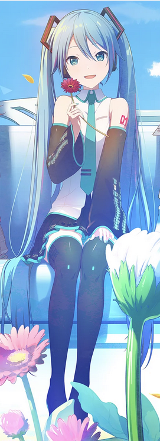

Latest Posts
What is Hatsune Miku?
Posted on: 04 Jan 2026 - Category: Intro

Hatsune Miku is a virtual singer. She is famous for her teal hair and futuristic style.
A lot of people think she is an anime character, but she is actually a music software
Fans can make songs using her voice, then share them online. That is why Miku has so many songs
made by different creators.
Vocaloid (and why people love it)
Posted on: 04 Jan 2026 - Category: Vocaloid
Vocaloid is a singing synthesizer software. It lets people type lyrics and melody, then the voice
“sings” it. Producers can edit the pitch, timing, and emotion to make it sound more natural (or more robotic).
I think Vocaloid is cool because it gives more people a chance to create music, even if they don’t have
a human singer.
- Easy to start (basic melody + lyrics)
- Big community (many tutorials + creators)
- Many styles (pop, rock, EDM, etc.)
My 3 favorite things about Miku’s community
Posted on: 04 Jan 2026 • Category: Fans
Miku is not just one person making music. She is like a shared character that everyone can use.
That makes the community feel very creative.
- Fan songs: thousands of unique tracks from different producers
- Fan art: many styles (cute, cool, futuristic)
- Concerts: live shows with stage visuals (very iconic)
If you want to suggest a song or artist, go to the Contact page and send it.